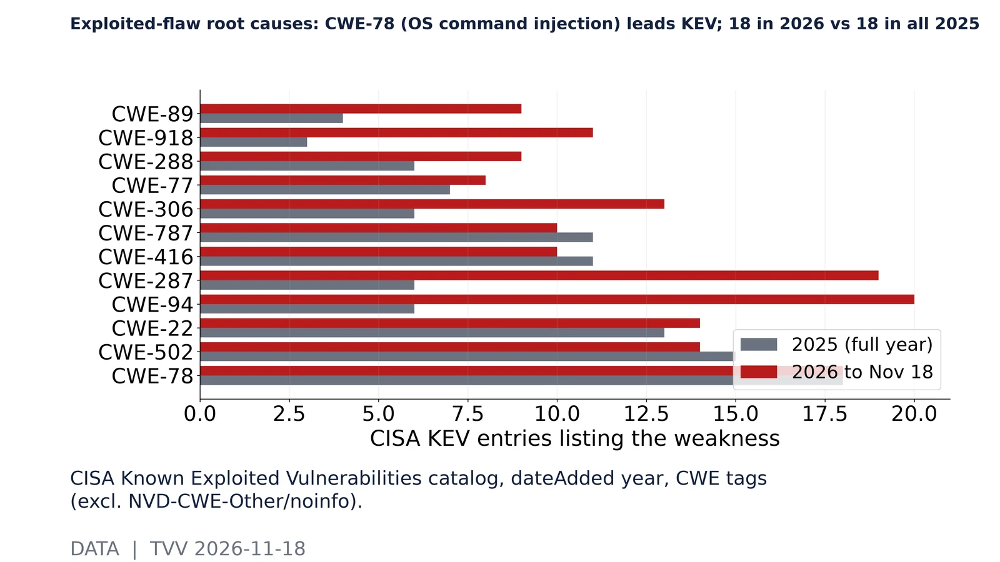
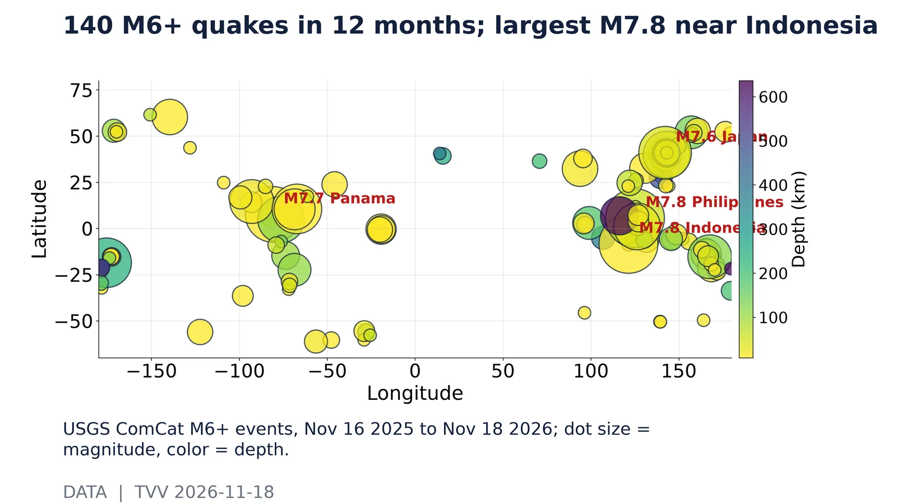
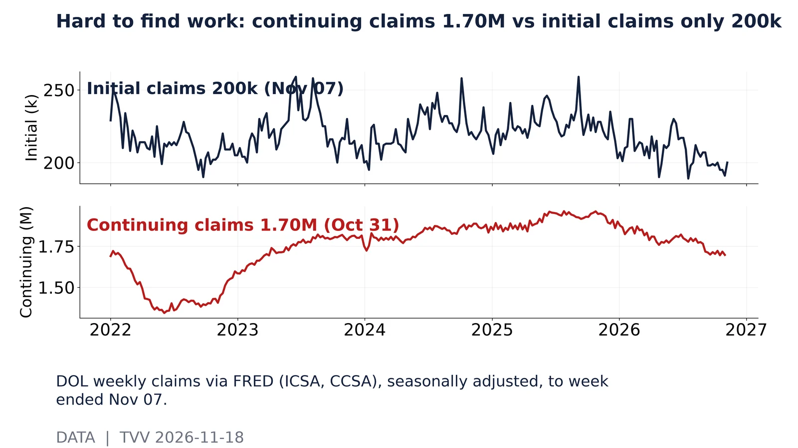
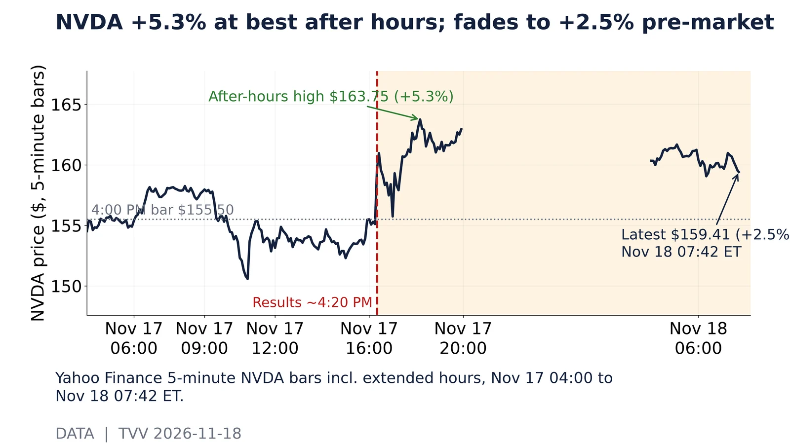
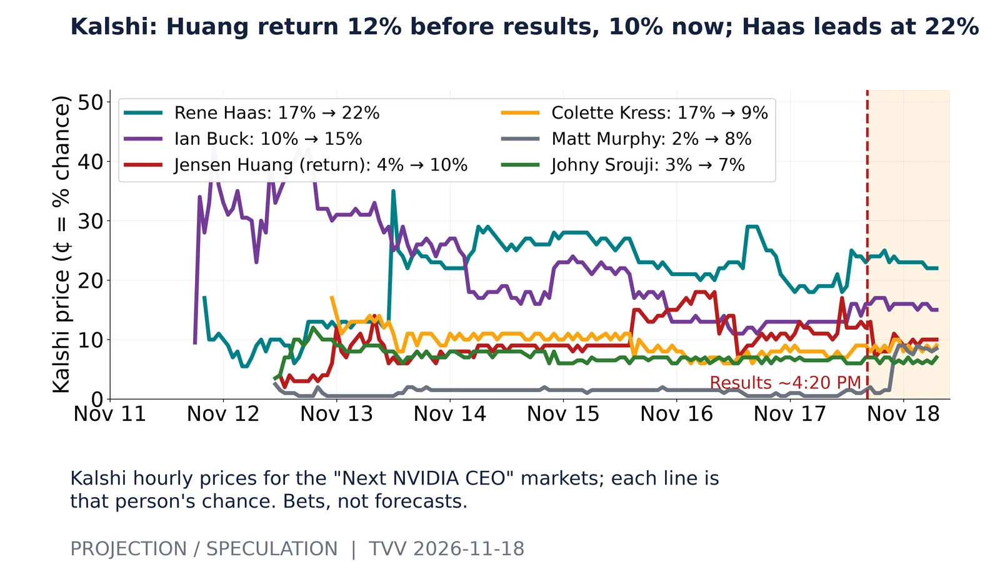
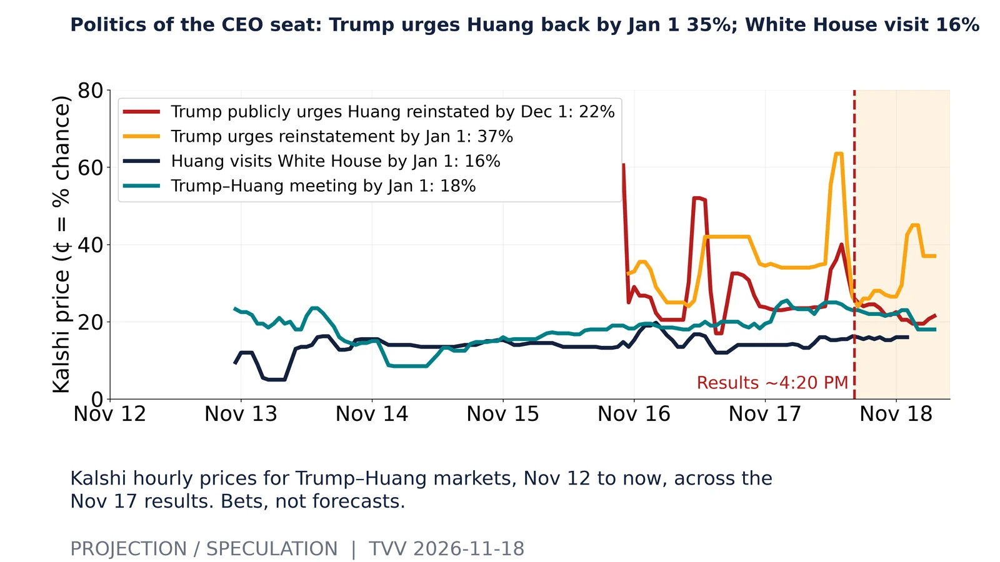
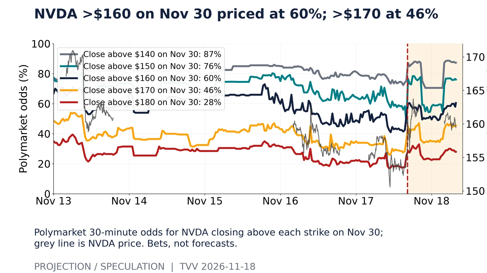
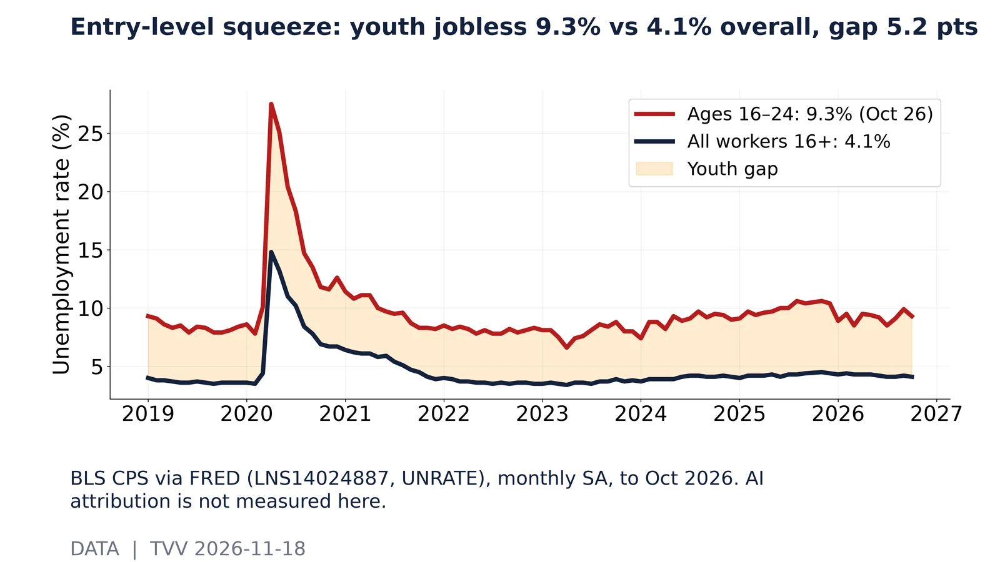
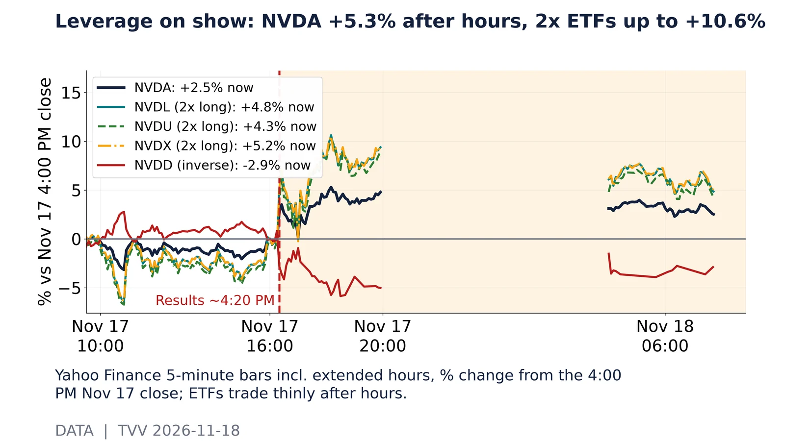

Export-control penalty odds: 28% by Mar 31 after Commerce closes the chip-rental route. Polymarket and Kalshi odds, last week. CNBC: Commerce moved Nov 16 to bar renting Nvidia chips to Chinese firms. Bets, not forecasts. Source: https://polymarket.com/event/nvidia-hit-with-a-bis-export-control-penalty-by

Exploited-flaw root causes: CWE-78 (OS command injection) leads KEV; 18 in 2026 vs 18 in all 2025. CISA Known Exploited Vulnerabilities catalog, dateAdded year, CWE tags (excl. NVD-CWE-Other/noinfo). Source: https://www.cisa.gov/known-exploited-vulnerabilities-catalog

140 M6+ quakes in 12 months; largest M7.8 near Indonesia. USGS ComCat M6+ events, Nov 16 2025 to Nov 18 2026; dot size = magnitude, color = depth. Source: https://earthquake.usgs.gov/earthquakes/search/
AI build-out borrowing: Oracle $130B and Meta $81B long-term debt, CoreWeave $17B. SEC XBRL company facts, 10-Q/10-K values; latest period differs by company (see legend). Excludes operating leases. Source: https://www.sec.gov/edgar/search/

Hard to find work: continuing claims 1.70M vs initial claims only 200k. DOL weekly claims via FRED (ICSA, CCSA), seasonally adjusted, to week ended Nov 07. Source: https://fred.stlouisfed.org/series/CCSA
Pump price $3.81 with WTI near $90; gasoline up +26% in a year. Weekly EIA retail gasoline (GASREGW) and daily WTI spot averaged weekly (DCOILWTICO), both via FRED. Source: https://fred.stlouisfed.org/series/GASREGW

NVDA +5.3% at best after hours; fades to +2.5% pre-market. Yahoo Finance 5-minute NVDA bars incl. extended hours, Nov 17 04:00 to Nov 18 07:42 ET. Source: https://finance.yahoo.com/quote/NVDA/

Kalshi: Huang return 12% before results, 10% now; Haas leads at 22%. Kalshi hourly prices for the "Next NVIDIA CEO" markets; each line is that person's chance. Bets, not forecasts. Source: https://kalshi.com/markets/kxnvdaceo

Politics of the CEO seat: Trump urges Huang back by Jan 1 35%; White House visit 16%. Kalshi hourly prices for Trump–Huang markets, Nov 12 to now, across the Nov 17 results. Bets, not forecasts. Source: https://kalshi.com/markets/kxtrumphuangback

NVDA >$160 on Nov 30 priced at 60%; >$170 at 46%. Polymarket 30-minute odds for NVDA closing above each strike on Nov 30; grey line is NVDA price. Bets, not forecasts. Source: https://polymarket.com/event/nvda-above-in-november-2026
Nvidia beat lifts AI chains: NVDA +2.5% pre-market, MU +1.2%, CRWV +2.7%. Yahoo Finance 5-minute bars incl. extended hours vs Nov 17 4:00 PM close; Vera Rubin shipments named CoreWeave, Oracle. Source: https://finance.yahoo.com/quote/SMH/

Entry-level squeeze: youth jobless 9.3% vs 4.1% overall, gap 5.2 pts. BLS CPS via FRED (LNS14024887, UNRATE), monthly SA, to Oct 2026. AI attribution is not measured here. Source: https://fred.stlouisfed.org/series/LNS14024887

Leverage on show: NVDA +5.3% after hours, 2x ETFs up to +10.6%. Yahoo Finance 5-minute bars incl. extended hours, % change from the 4:00 PM Nov 17 close; ETFs trade thinly after hours. Source: https://finance.yahoo.com/quote/NVDL/